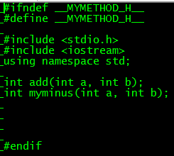
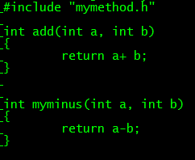
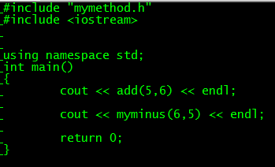
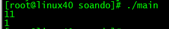
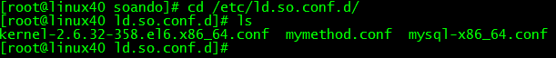

对Linux环境动态库和静态库的一些基础知识做一些总结，
首先总结静态库的编译步骤。
1 先基于.cpp或者.c文件生成对应的.o文件
2将几个.o文件 使用ar -cr命令 生成libname.a文件
libname.a 为静态库， name 为静态库的名字，
可以根据模块功能命名。
举个例子
在当前目录下，有一个mymethod.h文件

在mymethod.cpp里实现这两个函数

在当前目录下有一个main.cpp文件

为了方便使用，将mymethod.cpp封装成静态库和动态库
首先将mymethod.cpp 编译成目标文件
g++ -c mymethod.cpp -o mymethod.o
然后根据目标文件生成静态库
ar -cr libmymethod.a mymethod.oar命令可以用来创建、修改库，也可以从库中提出单个模块
-c 选项表示 创建一个库。不管库是否存在，都将创建
-r 选项表示 将模块插入库，如果库中有对应的模块，那么进行更新
如果把多个.o文件插入库.a里,只需要在后面用空格分开写出来
格式
ar -cr 静态库libname.a name1.o name2.o
静态库的命名有规则,格式为lib+库名+.a
生成静态库libmymethod.a后，
编译main.cpp 连接静态库生成可执行文件main
g++ main.cpp -o main -I ./ -L ./ -lmymethod
-I选项表示头文件路径
-L表示静态库或者动态库的路径
链接静态库写成 -l库名即可：-lmymethod
运行./main 可以输出结果

下面是动态库的编译
动态库的命名是lib+库名+.so
动态库需要使用-shared 选项以及-fPIC选项
g++ -c -fPIC mymethod.cpp -o mymethod.o-fPIC表示代码是和地址无关的，不需要被不同模块重定位
然后根据目标文件生成动态库.so文件
g++ -shared -o libmymethodso.so mymethod.o
-shared 选项表示生成的是.so动态库文件
下一步是链接动态库
g++ main.cpp -o main -I ./ -L ./ -lmymethodso
此时不能直接运行./main否则会提示找不到对应的动态库
上面的步骤可以直接写成一句话
g++ -shared -fPIC mymethod.cpp -o libmymethodso.so
我们现在有几种方式配置动态库的路径
第一种
export LD_LIBRARY_PATH="./:$LD_LIBRARY_PATH"
这种方式将动态库路径配置到LD_LIBRARY_PATH,只是暂时生效
第二种
使用 ldconfig 机制（需 root 权限）：
● 首先，在 /etc/ld.so.conf.d/ 下创建一个 .conf 文件，
如 libmymethod.conf ，内容为共享库所在目录的绝对路径
● 然后，运行 ldconfig
第一种比较简单，配置好后可以直接运行./main
第二种按照操作进入/etc/ld.so.conf.d/,
然后创建mymethod.conf

用vi打开mymethod.conf，添加动态库的绝对路径
/home/secondtonone/soando
最后运行ldconfig, 即可生效了。
这样就可以运行./main
现在对动态库路径配置做一个总结
解决共享库路径问题
gcc/g++ 编译期 :
● 使用 L 选项指定所需链接的共享库所在目录（如果共享库或其连
接文件位于 /usr/lib 、 /usr/local/lib 或由 LD_LIBRARY_PATH 指定
的目录下，则不需指定该选项）
● 使用 l 选项指定所需链接的共享库名称（无前缀、后缀）
程序运行期：
● 使用 LD_LIBRARY_PATH 环境变量来指定所需引用的共享库所在
目录 ( 临时指定或永久性写入相关文件，普遍适用于 UNIX 世界 )
● 使用 ldconfig 机制（需 root 权限）：
● 首先，在 /etc/ld.so.conf.d/ 下创建一个 .conf 文件，
如 libmymethod.conf ，内容为共享库所在目录的绝对路径
● 然后，运行 ldconfig
我的公众号，谢谢关注下。